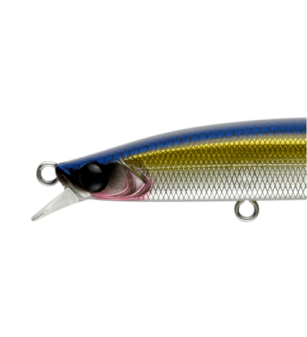
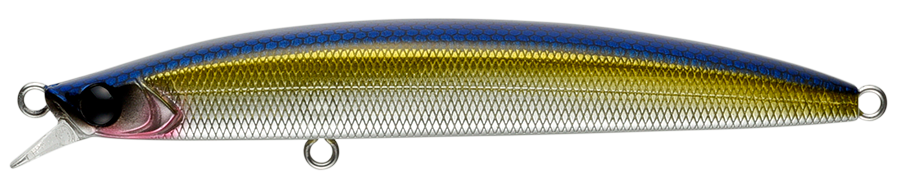
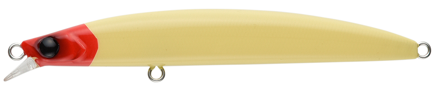
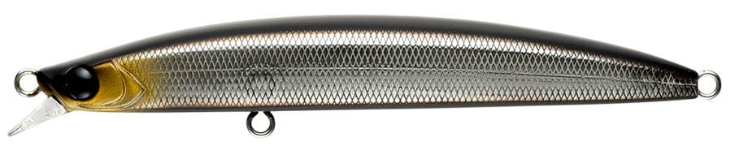
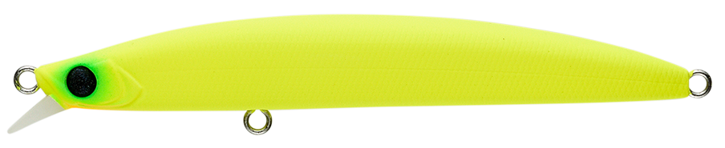
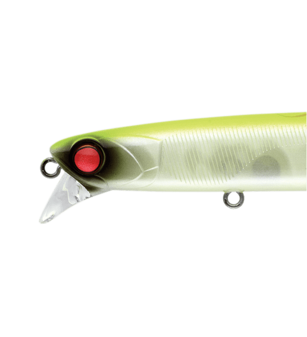

ドーバー120F リーヴァ
（DOVER120F Riva）
ドーバー120F リーヴァ（DOVER120F Riva）はAPIA（アピア）のフローティングミノーです。
「Riva（リーヴァ）」はイタリア語で海岸・湖岸・川岸など広く「水辺」を意味する言葉。その名のとおり、季節やフィールドを問わず幅広い条件下で使えることを追求したオールラウンドミノーです。タングステンウエイトで遠投性能と安定姿勢を実現し、120mmながら2フック仕様で大型フックを装着できるなど、ランカーへのこだわりも詰まっています。

画像出典:APIA公式HP
スペック
- メーカー
- APIA（アピア）
- タイプ
- フローティング（ミノー）
- 全長
- 120mm
- 自重
- 18g
- レンジ
- 60cm
- フック
- #3×2
- アクション
- ウォブンロール
- ターゲット
- シーバス・ヒラスズキ
- 価格
- 2,178円（税込）
▼今すぐチェック
ドーバー120F リーヴァの特徴
飛び・泳ぎ出し・流れへの強さがそろった、“投げ続けられる”ミノー
-
タングステンウエイトで遠投と安定した飛行姿勢
タングステンウエイトを採用し、遠投性能と安定した飛行姿勢を実現。狙いたいポイントやピンへ正確に届けやすい。
-
早い泳ぎ出しと流速に負けない泳ぎ
早い泳ぎ出し、適度な巻き抵抗、流速があっても破綻しない泳ぎ、緩い流れでの水噛みなど、ミノーに求められる要素を高い次元で満たしている。
-
2フック仕様でランカーに対応
120mmながら2フック仕様にすることで、大型フックの装着が可能。強すぎない泳ぎの中でも、フラットサイドボディが生む水押しでアピール力も高い。
ドーバー120F リーヴァの使い方
基本はただ巻き。素早く泳ぎ始めて回収までしっかり泳ぐので、まずは一定速度で巻いてレンジ60cm前後を探ります。
河川ではドリフトで明暗の境目に流し込むほか、ダウンの流れを当てながら巻いて明部へ出てくるコースを通すのも有効。流れを当てても暴れすぎないので、流速の早いエリアでも使いやすいミノーです。
ドーバー120F リーヴァの得意な状況
止水域から流れの速い河川、外洋まで、フィールドを問わず使えるのが最大の強み。
パイロットルアーとして最初に投げる1本にも、ここぞという場面の信頼の1本にも向いています。サラシのある磯でヒラスズキを狙う場面でも、2フック仕様で大型フックを使えるのが心強いポイントです。
ワンポイント
流れの強い場所では、アップクロスに投げて流れに乗せつつ巻くと、レンジ60cm前後を安定してキープしやすくなります。
太軸の大型フックに替えると浮力やアクションが変わるので、フックを替えたら足元で泳ぎを確認してから使いましょう。
ドーバーシリーズの使い分け
| モデル | 全長／自重 | 得意な場面 |
|---|---|---|
| ドーバー70F シャローランナー | 70mm／8.5g | フローティング・0〜30cm。シャロー攻略に |
| ドーバー82S | 82mm／10g | シンキング。近距離のピン撃ちに |
| ドーバー99F | 99mm／15g | フローティング・60〜90cm |
| ドーバー99S | 99mm／17g | シンキング |
| ドーバー120F リーヴァ | 120mm／18g | フローティング・60cm。オールラウンドに（本記事のモデル） |
ドーバーは「誰が投げても同じように泳ぐ」汎用性の高いミノーシリーズ。大きめのベイトや外洋、ランカー狙いなら120F リーヴァ、港湾の近距離戦なら82Sと、フィールドに合わせて選べます。
人気カラー
ドーバー120F リーヴァは全14色展開。シーバス・ヒラスズキ狙いでオススメのカラーを厳選して紹介します。

銀鱗ベイトナチュラルなベイトフィッシュカラー。澄み潮や日中に。

クラシックレッドヘッド定番のレッドヘッド。濁りやナイトでもシルエットを出しやすい。

黒銀サラシサラシの中で見せやすい黒銀系。磯のヒラスズキ狙いに。

どチャート高アピールのチャート。マズメや濁り潮に。
画像出典:APIA公式HP
ドーバー120F リーヴァに似ているルアー
-
 ドーバー82S
アピア
詳細はこちら＞
ドーバー82S
アピア
詳細はこちら＞
同じドーバーシリーズの82mmシンキングモデル。小場所やボートの近距離戦では82S、オープンエリアや外洋では120F リーヴァと使い分けやすい。
-
 カゲロウMD125F
メガバス
詳細はこちら＞
カゲロウMD125F
メガバス
詳細はこちら＞
全長125mm・自重21gのリップレスミッドダイバー。最大0.8mと、少し深いレンジを磯やサーフで攻めたいときに。
-

ラムタラバデル130 アピア 詳細はこちら＞全長130mm・自重20gのスローシンキングミノー。潜行深度60cmで、流速のある河川のドリフトに特化したいときの持ち替えに。